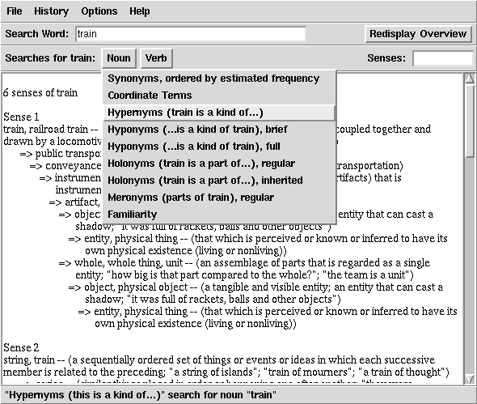

WordNet: Princeton 大学的心理学家，语言学家和计算机工程师联合设计的一种基于 认知语言学的英语词典。它不是光把单词以字母顺序排列，而且按照单词的意义 组成一个“单词的网络”。
比如，如果查一个单词: train. 我们马上可以得到它的6个名词词意和11个动 词词意，这些叫做"sense"。
1. (24) train, railroad train -- (public transport provided by a line of railway cars coupled together and drawn by a locomotive; "express trains don't stop at Princeton Junction") 2. (1) string, train -- (a sequentially ordered set of things or events or ideas in which each successive member is related to the preceding; "a string of islands"; "train of mourners"; "a train of thought") ....我们于是可以问 WordNet：“train 属于一种什么类型 的东西？” 它回答：
Sense 1
train, railroad train
=> public transport
=> conveyance, transport
=> instrumentality, instrumentation
.....
Sense 2
.....
你就知道 train 是一种 public transport, 而public transport是一种
transport, 而transport又是 一种instrumentation.
你还可以问：“train 包括那些部分？” WordNet 回答：
Sense 1
train, railroad train
HAS MEMBER: car, railcar, railway car, railroad car
HAS MEMBER: locomotive, engine, locomotive engine, railway locomotive
...
Sence2
...
嗯。火车包含车厢(car)，火车头(locomotive)，发动机……。你是不是学到了
很多？呵呵。
再来看看，我问：“有哪些类型的train?” WordNet 回答：
Sense 1
train, railroad train
=> boat train
=> car train
=> freight train, rattler
=> hospital train
=> mail train
=> passenger train
=> streamliner
=> subway train
再问：“跟 train 属于同一类的还有哪些东西？”
Sense 1
train, railroad train
-> public transport
=> bus, autobus, coach, charabanc, double-decker,
jitney, motorbus, motorcoach, omnibus
=> deadhead
=> express
=> local
=> shuttle
=> train, railroad train
对呀。train 是一种公共交通工具，公共交通工具还有bus, deadhead, ...
嘿嘿！deadhead 是什么呢？来看看：
1. (1) deadhead -- (a nonenterprising person who is not paying his way; "the deadheads on the payroll should be eased out as fast as possible") 2. deadhead -- (a train or bus or taxi traveling empty)嗯。空车。还有一个意思：白搭车的人？……我们来看看跟白搭车的人一类的 人还有哪些：
Sense 1
deadhead
-> nonworker
=> deadhead
=> idler, loafer, do-nothing, layabout, bum
=> retiree, retired person
=> striker
=> unemployed person
=> vacationer, vacationist
这些都是不干活的人，嗯…… 不做事的，退休的，罢工的，失业的，放假的……
train 还有动词的含义，我们来看其中一个：训练。
1. (14) train, develop, prepare, educate -- (create by training and teaching; "The old master is training world-class violinists"; "we develop the leaders for the future")这是主动动作，看例句就知道了。来看看，有哪些种类的训练？
Sense 1
train, develop, prepare, educate
=> retrain
=> drill
=> housebreak
=> toilet-train
哦~ 教人新东西，军事训练，教你的宠物怎样干净的在屋里生活(这个很重要哟:
P)，教你的小孩子怎样使用厕所……嗯……
你是不是发出一声惊叹！这个东西太神奇了！还有一个好消息就是：这个神 奇的东西居然不要钱！好了。到 WordNet 的网站去下载 这个程序吧 :)
给你一个抓图看看。
